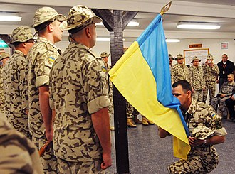
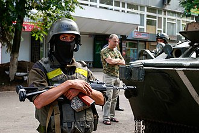
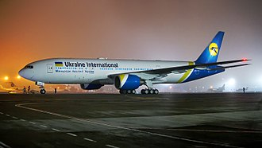

Украи́на(укр. Україна Информация о файле слушать) — государство в Восточной и частично Центральной Европе. Население — 40 997 699 постоянных жителей и 41 167 336 человек наличного населения[13] (34-е место в мире)Перейти к разделу «#Численность, расселение». Общая площадь — 603 549 км² (44-е место в мире); крупнейшее по площади государство, целиком находящееся в Европе.Перейти к разделу «#Границы» Столица — город Киев. Государственный язык — украинский.Перейти к разделу «#Языки» Украина — унитарное государство и смешанная республика. Должность президента с 20 мая 2019 года занимает Владимир Зеленский, премьер-министра с 4 марта 2020 года — Денис Шмыгаль.Перейти к разделу «#Государственное устройство» Страна подразделяется на 27 административно-территориальных единиц, 24 из которых являются областями, 1 — автономная республика (Крым) и 2 города (Киев, Севастополь[f])Перейти к разделу «#Административное деление» со специальным статусом. Граничит с Белоруссией на севере, Польшей, Словакией и Венгрией — на западе, Румынией и Молдавией[h] — на юго-западе, Россией — на востоке и северо-востоке. На юге и юго-востоке омывается Чёрным и Азовским морями; имеет морские границы с Румынией в Чёрном море и с Россией — в Чёрном и Азовском.Перейти к разделу «#Географическое положение» Часть территории Украины не контролируется её властями и, согласно украинскому законодательству, является временно оккупированной территорией. По состоянию на 24 мая 2022 года, Россией фактически было оккупировано более 20 % территории Украины[14]. Бо́льшая часть верующих исповедует православие, также есть приверженцы католицизма и грекокатолицизма, а также иудаизма и ислама.Перейти к разделу «#Население» Объём ВВП за 2021 год, рассчитанный по паритету покупательной способности (ППС) составил 588,4 млрд $ (14 330 $ на душу населения). Номинальный ВВП в 2021 году составил 198,3 млрд $ (4 830 $ на душу населения), занимая по показателю ВВП на душу населения (номинальному и по ППС) последнее место в Европе[15]. Денежная единица — гривна (UAH).Перейти к разделу «#Экономика» Независимость страны от СССР, союзной республикой которого Украина была с декабря 1922 года, провозглашена 24 августа 1991 года. Продолжательница государственно-национальных традиций и правопреемница УНР[16], государство — продолжатель УССР[17], соправопреемница СССР[18], соучредитель ООН, СНГ, ГУАМ, ОЧЭС и других международных организаций, официальный кандидат на вступление в Европейский союз. Согласно действующим международным договорам и конвенциям, имеет упрощённый доступ к Черноморским проливам[19], осуществляет научно-исследовательскую деятельность в Антарктиде[20].Перейти к разделу «#Независимая Украина»
Этимология
Основная статья:

По наиболее авторитетной и распространённой версии, в том числе и на самой Украине[21][22][23], название государства происходит от древнерусского слова ѹкраина — «пограничная область» — которое изначально применялось к разным пограничным землям Руси[24][25][26] и древнерусских княжеств. Генеральная карта Украины картографа де Боплана (1648). Ориентация карты — север внизу, юг наверху. Как сообщается в словаре Брокгауза и Ефрона, после того, как в 1569 г. Юго-Западная Русь вошла в Корону Польскую, часть её территории, простирающаяся от Подолья на западе до устья Днепра («очаковского поля») на юге и включающая в себя большую часть земель будущей Екатеринославской губернии на востоке, стала в этом государстве неофициально именоваться «Украиной»[27]. Связано это было с приграничным расположением этих территорий в польском государстве. Червонная Русь, Подолье, Волынь и Украина. Карта Якоба фон Зандрарта, 1687 Таким образом, в XVI—XVIII веках «Украина» становится названием конкретного географического региона среди названий других историко-этнографических регионов (Волынь, Подолия, Покутье, Северщина, Червоная Русь, Запорожье). Оно закрепляется за Средним Приднепровьем (Южной Киевщиной и Брацлавщиной) — территорией, контролируемой казаками[28]. Жителей этой территории стали называть украинцами или украинниками[29]. Географическую, а не этническую привязку этого понятия демонстрирует тот факт, что украинцами называли и служилую польскую шляхту на этих территориях[30]. Число украинцев постепенно росло, и название «Украина» распространилось на регионы за пределами первоначальной территории. Во времена восстания Хмельницкого оно стало применяться по отношению ко всей территории, где проходили военные действия. Понятие использовалось в письменных источниках и в произведениях устного народного творчества; пользовался им и сам Богдан Хмельницкий, и его преемники[28]. Оно, однако, не распространилось на все южнорусские земли и не стало названием государства[28]. После Андрусовского перемирия (1667), разделившего Украину по Днепру, в употреблении появляются названия «сегобочная Украина», «тогобочная Украина» и «Малороссийская Украина»[31]. С XVIII века понятие «Украина» используется в географическом смысле и является общеизвестным наравне с названием «Малороссия»[32]:183-184 По мере роста национального самосознания, значимость понятия «Украина» повысилась, и само слово стало восприниматься не только как географический термин, но отчасти и как название этнического пространства. Особенно заметно это стало к концу XIX века[32]:186. На рубеже XIX и XX веков термин «Украина» как название всей этнической территории стал полностью самостоятельным и самодостаточным, вытеснив другие самоназвания, которые с тех пор употреблялись только на региональном уровне[32]:186. В ходе борьбы украинского национального движения в 1920-х годах в связи с большевистской политикой началась коренизация и украинизация[33][34]. Некоторые украинские историки и лингвисты выдвигают версию, что название «Украина» происходит от слова «край», «краина», то есть просто «страна», «земля, заселённая своим народом»[35][36][37][38]. Эта версия, в частности, приводится в школьных учебниках по истории Украины[39][40]. При этом утверждается, что термины «україна» и «окраїна» всегда чётко различались по смыслу[35].
Физико-географическая характеристика
Географическое положение
Украина расположена в юго-восточной части Европы[55], в пределах Восточно-Европейской равнины. Территория республики в её международно признанных границах[g] составляет 603 549 км², что соответствует 5,7 % территории Европы и 0,44 % территории мира (44-е место по площади среди стран мира и 1-е среди стран, целиком находящихся в Европе[i]). Контроль Украины над Крымским полуостровом и частями Донецкой и Луганской областей был утрачен в 2014 году. Россия аннексировала почти всю территорию Крыма (за исключением севера Арабатской Стрелки, являющегося с 1954 года территорией Херсонской области), а отдельные районы Донецкой и Луганской областей контролируются самопровозглашёнными Донецкой Народной Республикой и Луганской Народной Республикой, соответственно; кроме того, в 2022 году Россия и поддерживаемые ею ДНР и ЛНР завоевали ряд других территорий Украины (части Херсонской, Запорожской и Харьковской областей, расширение «пророссийского» контроля в Донецкой и Луганской областях). Независимо от формы осуществления управления на этих территориях, все они, согласно украинскому законодательству, являются временно оккупированной частью страны. Территория Украины в её международно признанных границах[g] имеет размеры 1316 км с запада на восток и 893 км с севера на юг; лежит приблизительно между 52°20 и 45°20 северной широты и 22°5' и 41°15' восточной долготы. Крайний северный пункт — село Гремяч, Новгород-Северский район Черниговской области, южный — мыс Сарыч (Севастопольский регион) (по другим оценкам — мыс Николая, на 3,1 км восточнее мыса Сарыч)[g], западный — село Соломоново близ города Чоп Закарпатской области, восточный — село Ранняя Зоря[56][57] Луганской области. Украинские Карпаты Подсолнечниковое поле в степной зоне Украины Зуевский ландшафтный парк, Донецкая область Географический центр Европы по измерениям, проведённым в 1887 году военным ведомством Австро-Венгрии, а также советскими учёными после Второй мировой войны, располагается на территории современной Украины, недалеко от города Рахов Закарпатской области, хотя, по другим вычислениям, на это звание претендуют также точки в других государствах. Украина находится в зонах сосновых и смешанных лесов, лесостепи и степи. К северу от чернозёмного пояса распространены серые лесные и дерново-подзолистые почвы под смешанными лесами, к югу — тёмно-каштановые и каштановые почвы под сухими степями. Лесная зона включает разнообразные смешанные и лиственные леса с белой пихтой, сосной, буком и дубом; в лесостепной зоне леса — в основном, дубовые, а для степной зоны характерны травы и ленточные лесонасаждения.
История
Доисторический период
Представители рода Homo впервые появились на территории Украины около 1 млн лет назад. На территории Украины найдено около 30 остатков стоянок людей времён раннего палеолита, наиболее старые — Эчки-Даг, Гаспра, Ай-Петри, Мыс Маячный (близ Севастополя) в Крыму[65][66], Королёво в Закарпатской области, Амвросиевка в Донецкой области, Лука-Врублевецкая в Хмельницкой области[67], Непоротово в Черновицкой области[68]. Неандертальцы на территорию современной Украины пришли 150 тыс. лет назад[69], а кроманьонцы — около 40—30 тыс. лет назад. К верхнему палеолиту относятся стоянки Буран-Кая III[70], Кирилловская[71], Пушкари I, Мезинская[72] и другие[73]. Период энеолита (медный век) и неолита представлен трипольской, среднестоговской и рядом других культур[74]. Для периода бронзового века характерны ямная, катакомбная, срубная, белогрудовская, чернолесская культуры и ряд других археологических культур[75].
Античная эпоха
Скифы, ираноязычный народ из Центральной Азии, в VII веке до н. э. вытеснили киммерийцев из украинских степей[76]. Приблизительно в тот же самый период греки начали основывать первые колонии в Северном Причерноморье в рамках общегреческого колонизационного движения VIII—VI веков до н. э. (Великой греческой колонизации). Временны́е рамки древнегреческой колонизации Северного Причерноморья — середина VII—V век до н. э. Она проходила в несколько этапов и в нескольких направлениях: западном (Нижнее Побужье и Нижнее Приднепровье, Западный и Юго-Западный Крым) и восточном (оба берега Керченского пролива, побережье Кавказа и Приазовья). В ходе колонизации было основано несколько десятков полисов и посёлков, среди которых самыми крупными были Боспор Киммерийский, Ольвия, Херсонес Таврический, Фанагория, Тира, Нимфей, Гермонасса. Считается, что скифы создали первое государство на территории современной Украины. Около 200 года до н. э. скифов вытеснили сарматы. В III веке н. э. с северо-запада на территорию Украины переселились готы, которые здесь создали своё королевство Ойум — второе государственное образование на территории Украины. С готской эпохой тесно связывают также черняховскую археологическую культуру на Правобережье и в Причерноморье, которая существовала на рубеже II—III — рубеже IV—V веков[77]. В 375 году готы потерпели поражение от гуннов, пришедших из глубин Азии, и переселились за Дунай, в пределы Римской империи, где со временем создали свои королевства. Держава гуннов спустя столетие постепенно распалась на ряд тюркских государств. После нашествия гуннов гегемония над нынешней территорией Украины в конце V века перешла к славянским племенам антов и склавинов, представленных соответственно пеньковской (также частично колочинской) и пражско-корчацкой археологическими культурами. Вскоре левобережная часть территории Украины с Таврией попала в зависимость от Хазарского каганата (салтово-маяцкая археологическая культура). Северо-западные области Украины в настоящее время считаются наиболее вероятным местом зарождения славян. К славянским племенам на территории Украины относились в конце первого тысячелетия поляне, древляне, северяне, бужане, тиверцы, уличи, волыняне и другие.
Население
Численность и расселение
По итогам общенациональной переписи по состоянию на 5 декабря 2001 года население Украины составляло 48 240 902 постоянных жителей[201] и 48 457 102 человек наличного населения[202], а по оценочным данным, выведенным из расчёта на существующие темпы роста населения, к июлю 2012 года его численность уменьшилась до 44 596 155 человек[203]; к 1 января 2017 года — до 42 414 900 постоянных жителей и 42 584 500 человек наличного населения[204]. По состоянию на 1 января 2018 года по данным Госстата Украины, численность населения уменьшилась до 42 216 766 постоянных жителей и 42 386 403 человек наличного населения[205]. Эти данные — без учёта Крыма и Севастополя; с ними же, по состоянию на 1 мая 2014 года — около 45 363,3 тыс. человек наличного населения и 45 182 900 постоянных жителей[206]. Украина, таким образом, занимает 37-е место в мире по количеству жителей. Киев — столица и крупнейший город Украины с населением более 2,8 млн человек Средняя плотность населения составляет около 77,3 чел./км², при этом население распределено неравномерно: наиболее плотно заселены индустриальные восточные области (Донецкая, Луганская, Днепропетровская, Харьковская) и прикарпатские области (Львовская, Ивано-Франковская, Черновицкая). В частности, плотность населения Донецкой области составляет 172,9 чел./км², Львовской — 117,8, Днепропетровской — 107,3. Относительно редко заселены отдельные районы украинских Карпат, Полесья и южных областей (в Волынской области — 51,4 чел./км², Житомирской — 44,1, Херсонской — 39,2). Доля городского населения составляет 69,2 %. По состоянию на 1 января 2017 года, 3 города имели наличное население более 1 млн человек[207]: Киев (столица страны) — 2 925 760 человека; Харьков — 1 439 036 человек; Одесса — 1 010 783 человек[207].
Темпы роста, возрастная и гендерная структура
На рубеже XIX—XX веков на территории современной Украины наблюдался естественный прирост выше среднего по Российской Империи (14,9), наибольшие значения были отмечены в Екатеринославской, Таврической, Волынской губерниях и в Области Войска Донского[208]. Последующие войны (Первая мировая война, Гражданская война, Вторая мировая война, в ходе которых Украина стала зоной боевых действий) и голод 1920-х, 1930-х, конца 1940-х годов самым негативным образом повлияли на демографическую ситуацию, в результате этих событий погибли миллионы человек[61]. Помимо всего прочего, сказалось замедление темпов прироста населения, характерное для индустриально развитых стран. Так, если с 1897 по 1913 год (16 лет) население Украины увеличилось на 24 % (см. таблицу 1), то с 1959 по 1976 год (17 лет) — всего на 17 %, а с 1976 по 1992 год (16 лет) — на 6 %. Максимум численности населения Украины был отмечен в 1993 году, когда она достигла 52,2 млн. Начиная с этого года, регистрируется постоянное снижение численности населения с ростом эмиграции за границу, падением рождаемости и повышением смертности[209]. Уменьшение численности населения отмечается во всех регионах Украины, в том числе и в Киеве. По состоянию на 2020 год наименьшая убыль населения отмечалась в Черновицкой, Ровенской и Волынской областях[210]. В 2011 году в 11 тыс. населённых пунктов Украины не зафиксировано ни одного рождения[211]. В том же 2011 году рождаемость превысила смертность лишь в 5 из 25 регионах Украины — Киеве, Закарпатской, Волынской, Черновицкой и Ровненской областях[212]. В 2012 году Украина занимала 19-е место среди стран мира по показателям смертности на 1000 человек населения[213]. В 2013 году Украина находилась на 23-м месте в мире по уровню смертности на 1000 человек населения.
Государственное и политическое устройство
Украина — унитарная республика смешанного типа. Основным законом государства является конституция[218]. Согласно «Economist Intelligence Unit» Украина в 2018 была классифицирована по индексу демократии как гибридный режим, заняв 17-е место из 29 стран Восточной Европы[231].
Исполнительная власть
Главой государства является президент, который также является верховным главнокомандующим Вооружёнными силами Украины и председателем Совета национальной безопасности и обороны Украины[79]. Должность президента была учреждена 5 июля 1991 года[232], первым президентом Украины с 1991 по 1994 год являлся Леонид Кравчук. С 20 мая 2019 года должность президента занимает Владимир Зеленский[3].
Президент избирается сроком на 5 лет тайным голосованием на всеобщих прямых равных выборах, один и тот же человек не может занимать президентский пост более двух сроков подряд[218]. Леонид Кравчук стал первым в истории страны всенародно избранным президентом, победив на президентских выборах 1991 года[61].
Высший орган исполнительной власти Украины — кабинет министров, главой которого является премьер-министр и в состав которого входят первый вице-премьер, вице-премьеры и министры[61]. С 4 марта 2020 года премьер-министром является Денис Шмыгаль[4].
Законодательная власть
Единственным органом законодательной власти в стране является Верховная рада Украины[61]. Действующий созыв Верховной рады — девятый. Она является постоянно действующей структурой и созывается на сессии 2 раза в год[218]. Парламентские выборы На своих регулярных сессиях Верховная рада проводит инаугурацию избранного президента и утверждает предложенные президентом основные направления государственного курса на пятилетний срок. Президент несёт ответственность перед Верховной радой, парламент может объявить ему импичмент в порядке, установленном Конституцией[218]. Конституционный состав Верховной рады Украины — 450 депутатов[61]. В компетенцию парламента, согласно ст. 84 Конституции, входят разработка, принятие и контроль за исполнением законов, утверждение государственного бюджета, ратификация международных соглашений, назначение всеукраинского референдума и другие полномочия[218]. Народные депутаты Украины избираются на 5-летний срок в ходе прямых всеобщих равных выборов, проводимых по смешанной системе[79].
Судебная власть
Правосудие на Украине исполняется исключительно судами. Юрисдикция судов распространяется на все правоотношения, которые возникают в государстве. Система судов общей юрисдикции на Украине строится на принципах территориальности и специализации[61][218]. В судебной системе Украины действуют также хозяйственные (окружные, апелляционные) и административные (окружные, апелляционные) суды. Наивысшим судебным органом в системе судов общей юрисдикции является Верховный суд Украины. Ранее действовали Высший специализированный суд по рассмотрению гражданских и уголовных дел, Высший административный суд и Высший хозяйственный суд, ликвидированные в ходе судебной реформы[233]. В настоящее время в составе Верховного Суда действуют Большая Палата, а также кассационные административный, гражданский, уголовный и хозяйственный суды[234]. С 1 декабря 2021 года пост председателя Верховного Суда занимает Всеволод Князев[235]. Конституционный суд Украины является отдельным, независимым от судов общей юрисдикции. Он не может быть кассационной, апелляционной или наблюдательной инстанцией для судов общей юрисдикции. С 17 сентября 2019 года председателем Конституционного суда Украины является Александр Тупицкий[236].
Вооружённые силы
История и роль в жизни республики
24 августа 1991 года Верховный Совет Украины принял решение о взятии под свою юрисдикцию всех расположенных на Украине военных формирований Вооружённых сил СССР и о создании Министерства обороны Украины[263]. С 24 августа 1991 года под юрисдикцию Украины перешли 14 мотострелковых, 4 танковые, 3 артиллерийских дивизии и 8 артиллерийских бригад, 4 бригады спецназа, 2 воздушно-десантные бригады, 9 бригад ПВО, 7 полков боевых вертолётов, три воздушных армии (около 1100 боевых самолётов) и отдельная армия ПВО[264]. Стратегические ядерные силы, дислоцированные на территории Украины, имели 176 межконтинентальных баллистических ракет, а также около 2600 единиц тактического ядерного оружия.
Украинский миротворческий контингент в Ираке После распада Советского Союза и провозглашения в 1991 году независимости Украина унаследовала одну из наиболее мощных группировок войск в Европе, оснащённую ядерным оружием и достаточно современными образцами вооружения и военной техники. Правительство Украины приступило к созданию Вооружённых сил. Характерными признаками того периода были одновременное формирование правовой основы деятельности Вооружённых сил, реорганизация их структур, создания соответствующих систем управления, обеспечения и других элементов, необходимых для их функционирования. Кроме того, становление Вооружённых Сил Украины сопровождалось значительным сокращением военных структур, численности личного состава, количества вооружений и военной техники.
В основу процесса создания были заложены политические решения руководства Украины относительно безъядерного и внеблокового статуса государства. При этом учитывались также ограничения, связанные с ратификацией Договора «Об обычных вооружённых силах в Европе» и выполнением Ташкентского Соглашения 1992 года, которым устанавливались не только максимальные ровные вооружения для каждого государства прежнего СССР, но и для так называемого «флангового района». На Украине в него входили Николаевская, Херсонская, Запорожская области и Автономная Республика Крым. Украинский солдат по окончании противостояния в Славянске, 9 июля 2014 В сжатые сроки Верховной радой Украины был принят пакет законодательных актов относительно военной сферы: Концепция обороны и строительства Вооружённых Сил Украины, постановление «О Совете обороны Украины», Законы Украины «Об обороне Украины», «О Вооружённых Силах Украины», Военная доктрина Украины и тому подобное.
На те же годы приходится и реализация ядерного разоружения Украины. Оно является одним из наиболее значительных исторических событий конца XX века. Второе в истории человечества государство (после ЮАР) добровольно[265][266] отказалось от владения ядерным оружием. 5 декабря 1994 года лидерами Украины, США, России и Великобритании был подписан Меморандум о гарантиях безопасности в связи с присоединением Украины к Договору о нераспространении ядерного оружия — межгосударственный документ, гарантирующий соблюдение положений Заключительного акта СБСЕ, Устава ООН и Договора о нераспространении ядерного оружия в отношении Украины как не обладающего ядерным оружием государства-участника Договора[267]. На 1 июня 1996 года на территории Украины не осталось ни одного ядерного боезаряда или боеприпаса.
Так были заложены основы национальных вооружённых сил независимого государства: за короткий срок были созданы Министерство обороны, Генеральный штаб, виды Вооружённых сил, системы управления, подготовки и всестороннего обеспечения войск. июля 1992 года (после утверждения Верховной радой Украины Постановления от 3 июля 1992 года № 2538-XII «Об участии батальонов Вооружённых Сил Украины в Миротворческих Силах Организации Объединённых Наций в зонах конфликтов на территории прежней Югославии»)[268] вооружённые силы Украины активно участвуют в миротворческих операциях ООН и НАТО.
В конце июля 1992 года украинский миротворческий контингент впервые принял участие в боевых действиях — в составе сил UNPROFOR в ходе войны в Боснии. Начиная с 1992 года около 37 тыс. военнослужащих Вооружённых сил Украины приняли участие в международных миротворческих операциях, в том числе в таких странах как Ангола, Сербия (Косово), Северная Македония, Гватемала, Грузия (Абхазия и Южная Осетия), Молдавия (Приднестровье), Таджикистан, Афганистан, Хорватия, Кувейт, Сьерра-Леоне, Ирак, Ливан и Эфиопия. С конца зимы — начала весны 2014 года Вооружённые силы Украины принимают участие в российско-украинской войне: с 7 апреля 2014 года участвуют в боевых действиях на востоке Украины, а с 24 февраля 2022 года отражают полномасштабное вторжение России.
Экономика
Общее состояние, основные показатели
По данным МВФ, является 40-й в мире по размеру ВВП по ППС — $588 млрд (2021 год)[282]. По ВВП по ППС на душу населения Украина на 2021 год занимает последнее место среди стран Европы, и 97-е место в мире[282]. По индексу экономической свободы на 2022-й занимает 130-е место в мире и предпоследнее в Европе. В индексе восприятия коррупции за 2021 год на 122-м месте, предспоследнее в Европе. По индексу глобальной конкурентоспособности (GCI) в 2019 году занимала 85-е место в мире[283].
В стране развиты металлургия, энергетика (имеются атомные электростанции и каскад гидроэлектростанций на реке Днепр), а также химическая и горнодобывающая промышленности (добыча угля, руды). Наиболее развитые в экономическом отношении регионы — Киевский, Донецкий и Приднепровский[284].
После распада СССР, начиная с 1992 года в стране имела место прогрессивная деиндустриализация, принявшая в области высокотехнологичных производств и машиностроения тотальный характер. К 1999 году ВВП достиг «дна», составив около 40 % от уровня 1991 года. В несколько лучшем положении оказались металлургические, химические и другие энергоёмкие производства с низкой прибавочной стоимостью[источник не указан 820 дней].
Для экономики, при её рыночном характере, характерна активная роль государства: оно владеет примерно 140 крупными предприятиями в различных секторах национального хозяйства, а также контролирует цены на ряд товаров, включая базовые продукты питания и горюче-смазочные материалы. В объёме ВВП доля промышленного производства на 2011 год составляет 34,4 %, сферы услуг — 56,2 %, сельского хозяйства — 9,4 %. При этом в промышленности занято 18,5 %, в сельском хозяйстве — 15,8 % и в сфере услуг — 65,7 % работающего населения. Общая численность трудоспособного населения — 22,09 млн человек (30-е место в мире), уровень безработицы — 7 % (81-е место в мире)[285].
Украина считается экспортно ориентированной страной и, по некоторым оценкам, она получает за счёт экспорта 50 % ВВП[286]. Что касается импорта, в 2011 году по данным ВТО Украина заняла 25-е место среди мировых импортёров (без учёта торговли внутри ЕС) товаров с долей на глобальном рынке в 0,6 %[287].
В 2011 году журнал «Forbes» поместил Украину на 4-е место после Гвинеи в рейтинге 10 худших экономик мира[288]. В статье отмечено, что несмотря то, что Украина имеет богатые сельскохозяйственные угодья и минеральные ресурсы, и может стать ведущей европейской экономикой — её ВВП на душу населения находится далеко позади даже таких стран, как Сербия и Болгария. Госдепартамент США отмечает такие недостатки, как «Сложные законы и постановления, плохое корпоративное управление, слабое осуществление договорного права судами и особенно коррупцию».
В 2010 году ВВП Украины, по расчётам Всемирного банка, в долларовом эквиваленте составил около 136 млрд, 2011 — около 163 млрд, 2012—175,8 млрд, 2013—183 млрд, 2014—133,5 млрд, 2015 — 90,6 млрд[289].
По состоянию на май 2019 года Украина заняла 64-е место в мировом рейтинге лёгкости ведения бизнеса[290]. Согласно совместному исследованию группы Всемирного банка и PricewaterhouseCoopers «Paying Taxes 2020», Украина занимает 65-е место в рейтинге налоговых систем мира; на Украине 5 налогов, среди которых налог на прибыль и трудовой налог. Суммарная ставка налогов составляет 45,2 %[291].
Транспорт, инфраструктура, связь
Доля сектора транспорта и связи в валовом внутреннем продукте Украины (по данным Госкомстата) по состоянию на 2009 составила 11,3 %. Численность работников отрасли составляет 7 % от общей численности занятого населения. Выгодное географическое положение Украины обусловливает прохождение через неё международных транспортных коридоров.
Автомобильный транспорт
Протяжённость украинских дорог составляет около 164 732 км. Сеть основных маршрутов распространена по всей стране и соединяет все крупные города, а также предоставляет трансграничные маршруты с соседними странами.
Большинство украинских дорог не обновлялось с советских времён, и в настоящее время являются устаревшими[310]. Более 90 % существующих на Украине дорог эксплуатируется с превышением нормативного срока службы[311]. В рейтинге качества автомобильных дорог в странах мира, составляемом Всемирным экономическим форумом, Украина в 2018 году заняла 123-е место из 140 возможных, среди стран Европы Украина заняла предпоследнее место, опередив только Молдавию[312].
Воздушный транспорт
Действуют международные аэропорты в Киеве, Харькове, Днепре, Виннице, Мариуполе (с 2009 года не осуществляет регулярных рейсов, с 2014 года деятельность прекращена, из-за Вооружённого конфликта на востоке Украины аэропорт законсервирован), Львове, Одессе и Черновцах, Запорожье[313][314][315][316].
Авиационный сектор на Украине развивается очень быстро. Этому способствует безвизовый режим для граждан ряда стран. Кроме того, футбольный турнир Евро-2012 побудил правительство вложить значительные средства в строительство новых терминалов аэропортов[317] в Донецке, Львове и Киеве. Украина имеет ряд авиакомпаний, крупнейшей из которых является «Международные Авиалинии Украины».
Услугами авиакомпаний по официальным данным пользуются около 7 % населения Украины, что связано с низкой долей среднего класса в стране[318][319]. HRCS2 «Украинский экспресс» Вагоны модели 81-7021/7022 в Киевском метрополитене В рейтинге эффективности услуг воздушного транспорта в странах мира, составляемом Всемирным экономическим форумом, Украина в 2018 году заняла 94-е место из 140 возможных, отставая от большинства соседних стран (Молдавии, Румынии, Венгрии, Польши, России)[320].
Спорт
Распространение среди украинцев европейских видов спорта началось в начале XX века. Власти независимой Украины, как правило, придавали большое значение развитию и популяризации спорта, реализуя соответствующие государственные программы, в частности, через структуры Министерства по делам молодёжи и спорта.
К XXI веку в стране в той или иной степени получили распространение практически все летние виды спорта — как мужские, так и женские дисциплины. На летних Олимпийских играх 2012 года командой Украины были завоёваны 6 золотых, 5 серебряных и 9 бронзовых медалей.
В 2019 году Сборная Украины по футболу (до 20 лет) выиграла Чемпионат мира по футболу среди молодёжных команд 2019 одержав волевую победу над командой Южной Кореи со счётом 3:1 и таким образом впервые стала чемпионом мира.
В 2016 году Сборная Украины по пляжному футболу выиграла ежегодный европейский чемпионат по пляжному футболу обыграв в финале Португалию со счётом 2:1.
В 2009 году Юношеская сборная Украины по футболу (до 19 лет) обыграла в финале Англию со счётом 2:0 на домашнем чемпионате Европы таким образом впервые выиграв европейский кубок.
В 2009 году донецкий «Шахтёр» в финале Кубка УЕФА в Стамбуле обыграл бременский «Вердер» со счётом 2:1.
К числу наиболее популярных среди населения дисциплин относятся футбол, единоборства, мотоспорт, шахматы.
Крупнейший стадион — киевский «Олимпийский» (многофункциональный, на 70 тыс. зрителей). Вторым крупнейшим был донецкий «Донбасс Арена» (футбольный, на 50 тыс. зрителей[343]), но во время вооружённого конфликта он получил серьёзные повреждения и на нём соревнования не проводятся[344].
Культура и искусство
Общие сведения
Украинская культура на протяжении длительных периодов своей истории развивалась как народная. В ней большое место занимали фольклор и народные традиции. Особенно ярко это проявилось в искусстве — народных думах, песнях, танцах, декоративно-прикладном искусстве. Именно благодаря сохранению и продолжению традиций, корни которых восходят к культуре Киевской Руси, стал возможным подъём украинской культуры и в XVI—XVII веках, и культурное возрождение в XIX веке.
В то же время ощутимы и отрицательные последствия такого характера развития украинской национальной культуры. В течение длительного времени много талантливых людей, которые родились и выросли на Украине, затем покидали её, связывали свою дальнейшую жизнь и творчество с русской, польской и другими культурами. Кроме того, прогресс в области естественных наук был выражен слабее, чем в гуманитарной.
Вместе с тем, самобытная и старинная система образования, которая достигла своего расцвета во время Казачества и обеспечила почти сплошную грамотность населения, давняя традиция книгописания, ориентированность на ведущие центры Европы — в частности, на византийские культурные традиции — роль Западной Руси как центра наук и высшего образования благодаря развитой сети коллегиумов, Острожской и Киево-Могилянской академии; меценатство и государственная поддержка культуры рядом выдающихся государственников — К. Острожским, П. Конашевичем-Сагайдачным, И. Мазепой и др. — всё это позволило поднять украинскую культуру на мировой уровень, создать ряд классических шедевров в области книгопечатания, архитектуры, литературы, достичь значительных успехов в науке.
Известный исследователь украинской культуры И. Огиенко отмечал, что украинской культуре с самого начала были присущи открытость миру, отсутствие ксенофобии и гуманизм. Сама система ценностей данной культуры в период её активного развития (XVII—XIX века) была довольно специфической. Богатый материал для такого вывода даёт творческое наследие Г. Сковороды, Ф. Прокоповича, П. Кулиша, Т. Шевченко. В своих философских сочинениях они решали вопрос о сущности и условиях человеческого счастья, о смысле человеческого существования.